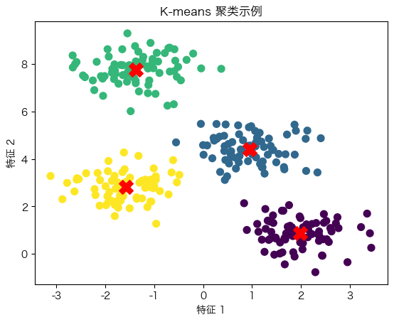
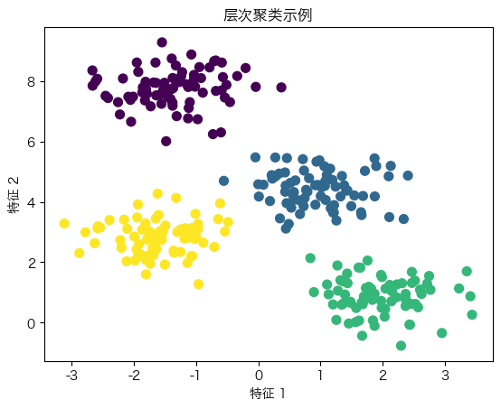
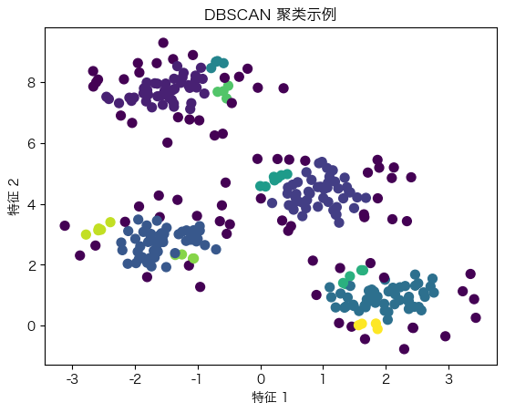

聚类分析#
聚类分析是一种无监督学习方法，旨在将相似的样本聚集在一起，形成簇。聚类分析在市场细分、图像分割、社交网络分析等领域有广泛应用。常见的聚类算法包括K-means聚类、层次聚类和DBSCAN等。
K-means聚类#
K-means聚类是一种常用的聚类算法，通过迭代优化将数据分为K个簇。每个簇由一个质心代表，算法通过最小化簇内样本到质心的距离平方和来进行聚类。
import numpy as np
import matplotlib.pyplot as plt
from sklearn.datasets import make_blobs
from sklearn.cluster import KMeans
# 设置字体和解决负号显示问题
plt.rcParams['font.sans-serif'] = 'Hiragino Sans GB'
plt.rcParams['axes.unicode_minus'] = False
# 生成示例数据
X, y = make_blobs(n_samples=300, centers=4, cluster_std=0.60, random_state=0)
# 拟合 K-means 模型
kmeans = KMeans(n_clusters=4)
kmeans.fit(X)
y_kmeans = kmeans.predict(X)
# 绘制聚类结果
plt.scatter(X[:, 0], X[:, 1], c=y_kmeans, s=50, cmap='viridis')
plt.scatter(kmeans.cluster_centers_[:, 0], kmeans.cluster_centers_[:, 1], s=200, c='red', marker='X')
plt.title('K-means 聚类示例')
plt.xlabel('特征 1')
plt.ylabel('特征 2')
plt.show()

层次聚类#
层次聚类通过构建聚类树，逐步合并或分裂簇。层次聚类分为自底向上（凝聚型）和自顶向下（分裂型）两种方法。
from sklearn.cluster import AgglomerativeClustering
# 拟合层次聚类模型
hc = AgglomerativeClustering(n_clusters=4)
y_hc = hc.fit_predict(X)
# 绘制层次聚类结果
plt.scatter(X[:, 0], X[:, 1], c=y_hc, s=50, cmap='viridis')
plt.title('层次聚类示例')
plt.xlabel('特征 1')
plt.ylabel('特征 2')
plt.show()

DBSCAN#
DBSCAN（Density-Based Spatial Clustering of Applications with Noise）是一种基于密度的聚类算法，能够识别任意形状的簇，并自动检测噪声点。
from sklearn.cluster import DBSCAN
# 拟合DBSCAN模型
dbscan = DBSCAN(eps=0.3, min_samples=5)
y_dbscan = dbscan.fit_predict(X)
# 绘制DBSCAN聚类结果
plt.scatter(X[:, 0], X[:, 1], c=y_dbscan, s=50, cmap='viridis')
plt.title('DBSCAN 聚类示例')
plt.xlabel('特征 1')
plt.ylabel('特征 2')
plt.show()

通过以上示例，我们了解了K-means、层次聚类和DBSCAN的基本原理和应用。在实际应用中，选择合适的聚类算法需要考虑数据的特点和具体的应用场景。